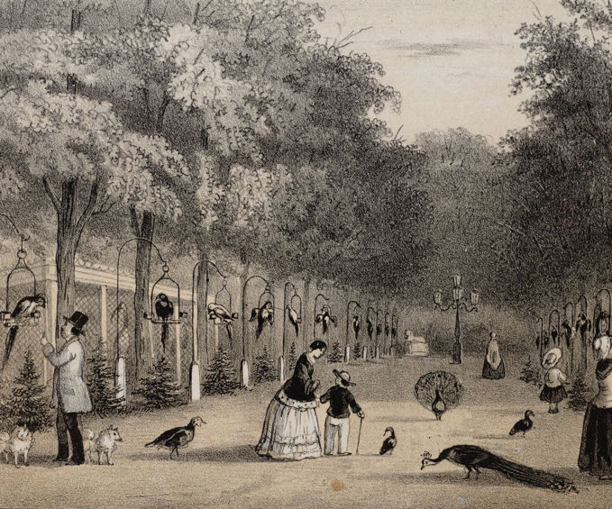

Artis park
In ARTIS-Park ontmoet je dieren en planten uit alle hoeken van de wereld, en geeft het Planetarium je een uniek perspectief.
- ontdek artis park
- plan je bezoek
- reis door de ruimte
 Plan je bezoek
Plan je bezoek Missie van artis
Missie van artis Actie: Word lid
Actie: Word lid
In ARTIS-Park ontmoet je dieren en planten uit alle hoeken van de wereld, en geeft het Planetarium je een uniek perspectief.
Daarom is het essentieel om onze band met natuur te versterken. Deze visie drijft ons dagelijks. Niet alleen als ideaal, maar als een oproep tot gezamenlijke actie voor een leefbare aarde, voor de generaties van vandaag en morgen.
In ARTIS is geen bezoek hetzelfde. Beleef dit najaar nóg meer met het speciale actieticket en kom voor slechts €30 twee keer naar ARTIS!
Als eerste publieke dierentuin van Nederland – en nog altijd één van de vijf oudste ter wereld – is ARTIS uitgegroeid tot een inspirerende plek middenin de stad, waar natuureducatie en -beleving hand in hand gaan.

ARTIS gelooft in de kracht van educatie. In ARTIS-Park, Micropia en het Groote Museum ontdek je hoe al het leven met elkaar verbonden is. ARTIS wil haar bezoekers niet alleen laten leren van natuur, maar hen ook inspireren om deze kennis toe te passen en mee te bouwen aan een duurzame toekomst.

De wereld verbeteren doe je samen. Daarom nodigt ARTIS bezoekers, wetenschappers en natuurbeschermers uit om samen de wereld een beetje beter te maken.
Het behoud van dier- en plantensoorten, die steeds vaker met uitsterven worden bedreigd, staat hierbij op nummer één.

Als stichting en goed doel zet ARTIS zich dagelijks in voor een leefbare toekomst voor de aarde en al haar bewoners. Dit kan alleen met de steun van bezoekers, donateurs en partners. Elke bijdrage – groot of klein – helpt om deze missie voort te zetten en natuur te beschermen voor de generaties van vandaag en morgen.
Onlangs verscheen de ARTIS-bijlage in Het Parool. Hierin wordt belicht hoe ARTIS altijd in beweging is en steeds nieuwe manieren verkent om mensen dichter bij de natuur te brengen.

scholieren en studenten
rijksmonumenten
natuurbehoud projecten
natuureducatieve activiteiten per dag
Plantage Kerklaan 38 - 40
koop je ticket